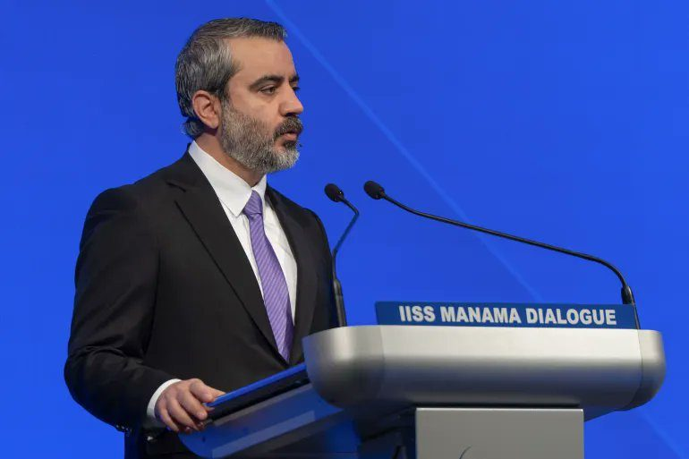

Världen
Delvis obekräftatSyrien överväger att gå med i försvarspakten mellan Saudiarabien, Turkiet och Pakistan

Syriens utrikesminister Asaad al-Shaibani säger att landet utvärderar att ansluta sig till den gemensamma försvarspakt som Saudiarabien, Turkiet och Pakistan undertecknade i Mecka i augusti. Beskedet kom på en säkerhetskonferens i Bahrain på lördagen. Någon formell ansökan eller något beslut finns ännu inte.
Syrien kan bli nästa land i en ny militär allians i Mellanöstern och Sydasien. På lördagen sa Syriens utrikesminister Asaad al-Shaibani att Damaskus utvärderar att gå med i den gemensamma försvarspakt som Saudiarabien, Turkiet och Pakistan skrev under i Mecka i augusti. Det skedde på säkerhetskonferensen IISS Manama Dialogue i Bahrain, enligt bland andra BasNews och Garowe Online.
En försvarspakt med kärnvapenmakt
Pakten bygger på principen att ett angrepp på ett av länderna räknas som ett angrepp på alla, skriver MaxOsint. Den omfattar också samarbete om underrättelser och försvar. I och med att Pakistan är med ingår en kärnvapenmakt.
Hittills handlar det bara om att Syrien överväger saken. World in Motion påpekar att det inte finns någon formell ansökan, och inget av de tre länderna har sagt något offentligt om hur de ser på ett syriskt medlemskap. Al-Shaibani upprepade samtidigt att Syrien står bakom säkerheten i Gulfländerna.
Ett tecken på en ny kurs
Beskedet passar in i hur Syriens regering har vänt sig mot Saudiarabien och Turkiet sedan Bashar al-Assad föll. Det kommer också medan Israel fortsätter att angripa mål på syriskt territorium, något flera av kontona lyfter fram som bakgrund, bland andra Clash Report och Military Summary. Den brittiska tankesmedjan CENO kallar det en betydande strukturell förskjutning i regionen, eftersom Syrien under Assad i stället stod nära Iran och Ryssland.
Nyheten har spridits brett, från nyhetsbyrån AIJES i Paris till konton som följer konflikterna i regionen. Några enstaka konton beskriver pakten som ett amerikanskt projekt, men det är spekulation som vi inte har sett något stöd för.
Så vet vi det
Källmix: 8 källor – 1 analys, 5 journalist, 2 etablerad media. Etablerad media utgör 2 av 8.
- Journalist Clash Report: Syrien överväger att gå med i pakten
- Journalist Military Summary: al-Shaibani om pakten
- Journalist World in Motion: ingen formell ansökan ännu
- Journalist MaxOsint: paktens klausul om angrepp på en som angrepp på alla
- Journalist AIJES, nyhetsbyrå i Paris: uttalandet i Manama
- Analys CENO, brittisk tankesmedja: en betydande strukturell förskjutning
- Etablerad media BasNews: beskedet kom vid Manama Dialogue
- Etablerad media Garowe Online: Damaskus utvärderar ett medlemskap
Uttalandet återges samstämmigt av ett stort antal nyhetskonton och nyhetsbyråer från olika länder, men vi har inte hittat något eget inlägg från det syriska utrikesministeriet eller från de tre paktländerna. Hur pakten är utformad i detalj bygger på sammanfattningar på X. Tolkningarna av vad steget betyder är just tolkningar.
Fördjupa
Frågorna öppnar Grok i en ny flik med artikeln som underlag. AI-svar kan innehålla fel, så kontrollera mot källorna.
- Vad innebär Mecka-pakten mellan Saudiarabien, Turkiet och Pakistan? ↗
- Varför vill Syriens nya regering knyta sig närmare Saudiarabien och Turkiet? ↗
- Hur kan Israel reagera om Syrien går med i en försvarsallians? ↗
- Vad betyder Pakistans kärnvapen för en pakt där ett angrepp på ett land räknas som ett angrepp på alla? ↗
- Hur har Syriens utrikespolitik förändrats sedan Assad föll? ↗
Läs vidare
Uppdateringslogg
- 17:25 – Artikeln publicerad.